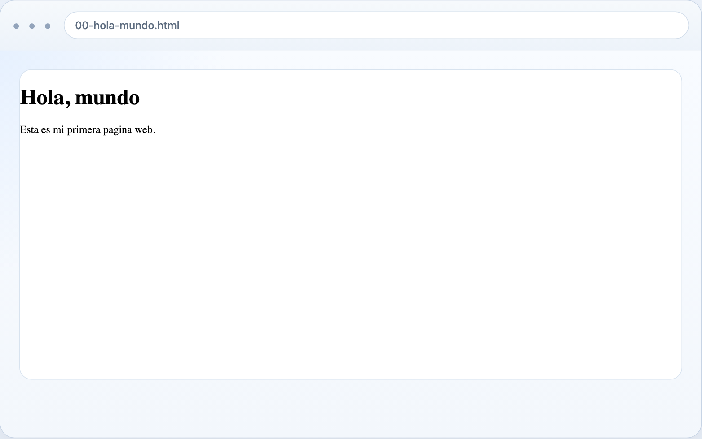
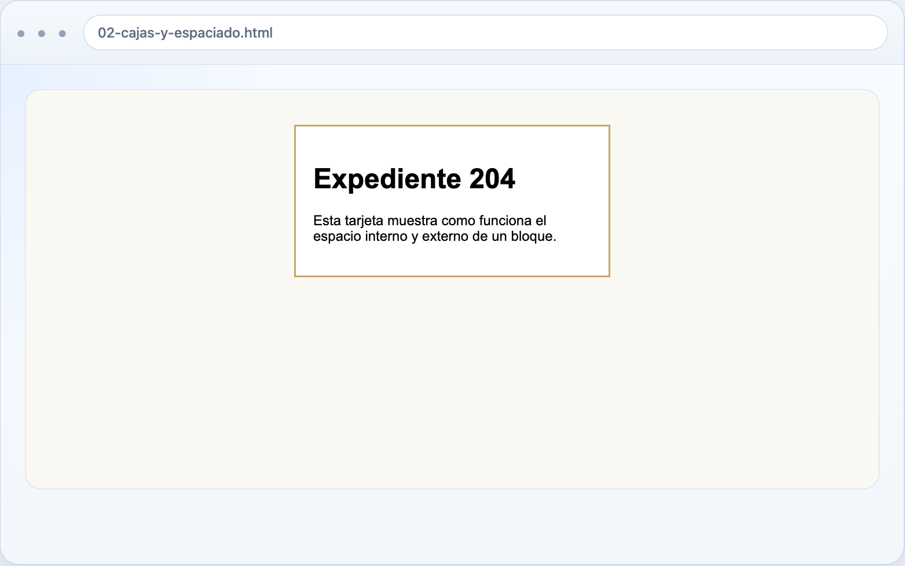
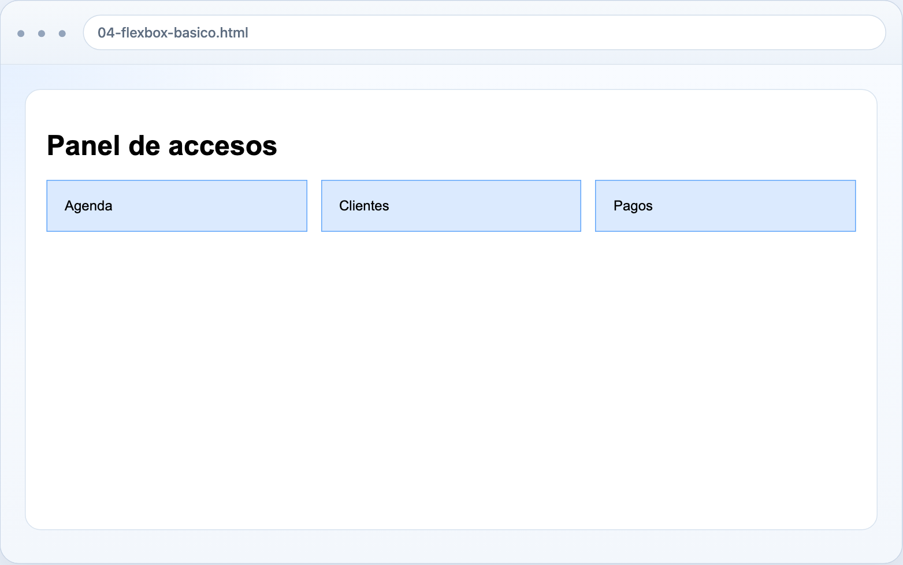
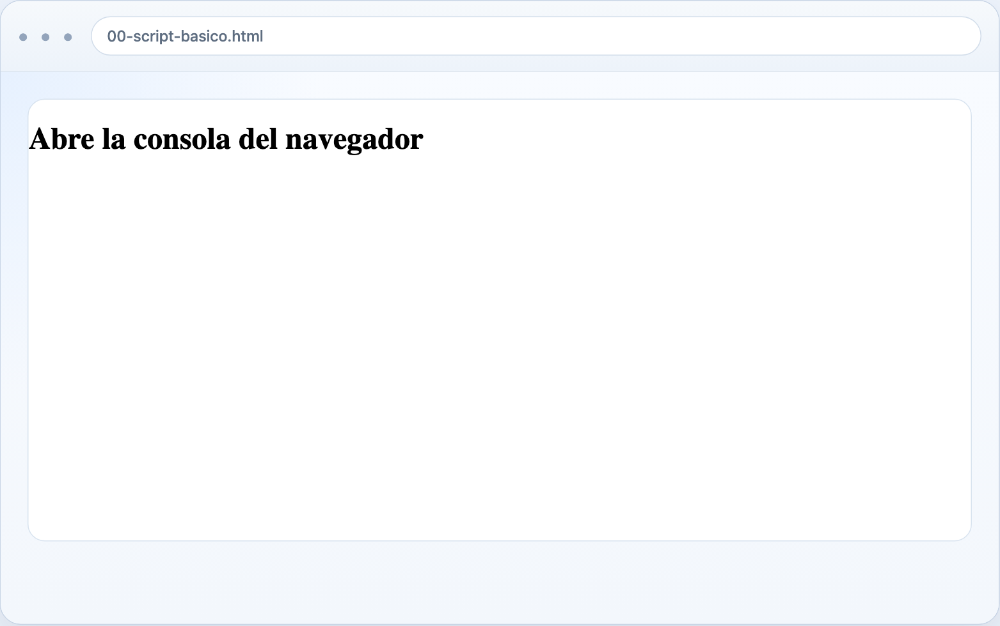
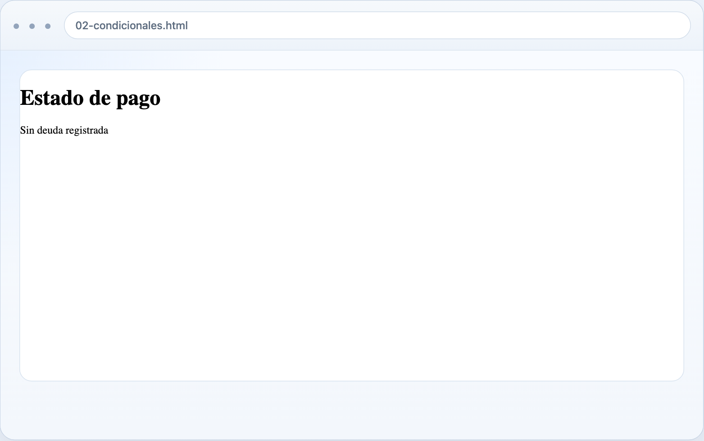
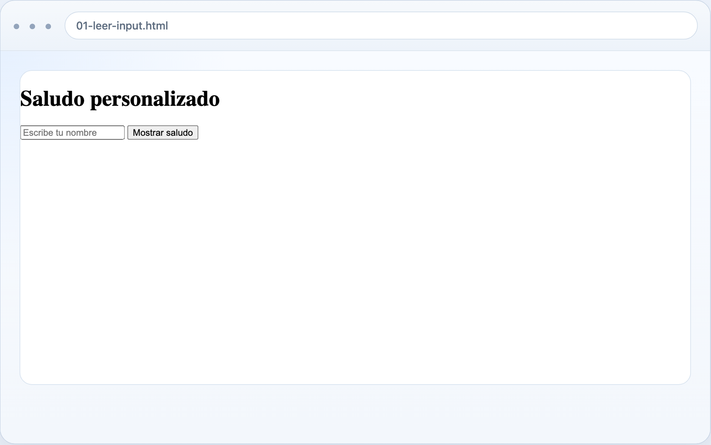
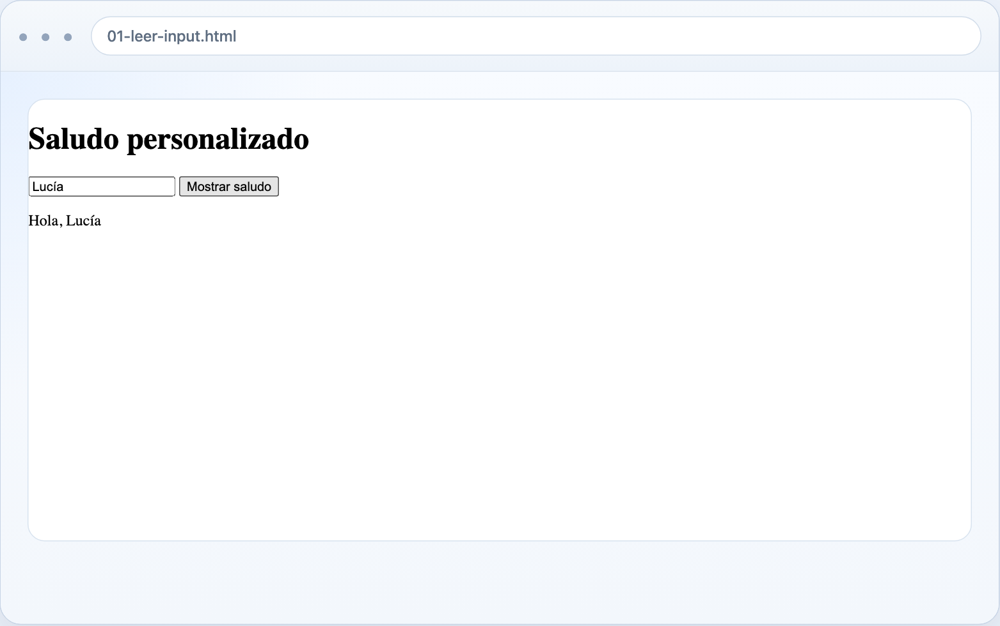

–>
Para los profesionales que se atrevan a enfrentar el presente

La diferencia parece simple, pero enseña algo fundamental. HTML describe la estructura del contenido y el navegador decide cómo presentarla. El h1 aparece como encabezado principal; el p aparece como párrafo. Cuando abras el archivo en el navegador, no verás “código fuente”, sino la interpretación visual de ese código.
Ejercicio 2. Organizar información con títulos y secciones
Cuando la página deja de ser un simple saludo, la pregunta cambia: ya no basta con mostrar algo, sino que conviene ordenarlo. Los títulos y subtítulos sirven justamente para eso.
Copia este archivo:
<!DOCTYPE html>
<html lang="es">
<head>
<meta charset="UTF-8">
<title>Texto y titulos</title>
</head>
<body>
<h1>Introduccion al derecho digital</h1>
<h2>Que estudia</h2>
<p>Estudia los efectos de la tecnologia en las normas, procesos y relaciones entre personas.</p>
<h2>Por que importa</h2>
<p>Ayuda a entender temas como privacidad, contratos electronicos y firma digital.</p>
</body>
</html>La transición importante aquí es conceptual. HTML no sirve solo para “poner texto”, sino para indicar jerarquías. Un h1 no cumple la misma función que un h2, y esa diferencia importa para legibilidad, accesibilidad y organización del contenido.
Ejercicio 3. Listas, enlaces y tablas como formas de trabajo
Una parte significativa del trabajo jurídico se presenta como colección de elementos: tareas, documentos, citas, requisitos o registros. Por eso conviene ver tres estructuras muy comunes: listas, enlaces y tablas.
Lista y enlace
<!DOCTYPE html>
<html lang="es">
<head>
<meta charset="UTF-8">
<title>Listas y enlaces</title>
</head>
<body>
<h1>Tareas de hoy</h1>
<ul>
<li>Leer una resolucion</li>
<li>Ordenar expedientes</li>
<li>Enviar un correo</li>
</ul>
<p>
Puedes buscar mas informacion en
<a href="https://developer.mozilla.org/es/" target="_blank" rel="noreferrer">MDN en espanol</a>.
</p>
</body>
</html>Tabla simple
<!DOCTYPE html>
<html lang="es">
<head>
<meta charset="UTF-8">
<title>Tabla simple</title>
</head>
<body>
<h1>Registro de citas</h1>
<table border="1">
<tr>
<th>Persona</th>
<th>Fecha</th>
<th>Estado</th>
</tr>
<tr>
<td>Ana Perez</td>
<td>2026-05-30</td>
<td>Confirmada</td>
</tr>
<tr>
<td>Luis Rojas</td>
<td>2026-06-02</td>
<td>Pendiente</td>
</tr>
</table>
</body>
</html>En estos ejemplos HTML deja ver algo más cercano al trabajo real: una lista sirve para agrupar elementos del mismo tipo, un enlace conecta la página con otro recurso y una tabla organiza información en filas y columnas. Aunque los ejemplos son pequeños, ya aparecen formas de representación muy útiles para portales, fichas y paneles sencillos.
Ejercicio 4. Formularios: capturar información
La web no solo publica; también recibe datos. Por eso los formularios son una pieza central de muchos servicios digitales.
<!DOCTYPE html>
<html lang="es">
<head>
<meta charset="UTF-8">
<title>Formulario simple</title>
</head>
<body>
<h1>Formulario de contacto</h1>
<form>
<label for="nombre">Nombre</label>
<input id="nombre" type="text" placeholder="Escribe tu nombre">
<br>
<br>
<label for="correo">Correo</label>
<input id="correo" type="email" placeholder="correo@ejemplo.com">
<br>
<br>
<label for="mensaje">Mensaje</label>
<br>
<textarea id="mensaje" rows="4" cols="30"></textarea>
<br>
<br>
<button type="submit">Enviar</button>
</form>
</body>
</html>La enseñanza del ejemplo no está en enviar el formulario, sino en reconocer los bloques básicos de entrada: label, input, textarea y button. Muchos servicios jurídicos digitalizados dependen precisamente de esta lógica de captura estructurada.
CSS: volver legible la página
Una página correctamente estructurada puede seguir viéndose pobre o confusa. Allí entra CSS: no cambia qué cosa es cada bloque, pero sí cómo se presenta (MDN Web Docs 2026). Eso importa porque en interfaces jurídicas y profesionales la legibilidad también forma parte de la calidad del servicio.
Ejercicio 5. Primeros estilos: fuente, fondo y color
<!DOCTYPE html>
<html lang="es">
<head>
<meta charset="UTF-8">
<title>CSS basico</title>
<style>
body {
font-family: Arial, sans-serif;
background-color: #f4f7fb;
margin: 0;
padding: 24px;
}
h1 {
color: #1d3557;
}
p {
color: #444;
line-height: 1.6;
}
</style>
</head>
<body>
<h1>Pagina con estilos</h1>
<p>CSS permite cambiar la apariencia de una pagina web.</p>
</body>
</html>Este archivo muestra una primera decisión importante: CSS puede escribirse dentro de <style> cuando el ejemplo es pequeño. El resultado visible suele ser inmediato. Cambia la tipografía, aparece un fondo y el texto gana legibilidad. La estructura sigue siendo la misma, pero la experiencia de lectura ya no es equivalente.
Ejercicio 6. Colores, cajas y espaciado
Cuando una página necesita destacar un mensaje o separar un bloque del resto, entra en juego el modelo de caja. Eso significa pensar en ancho, margen, relleno y bordes.
<!DOCTYPE html>
<html lang="es">
<head>
<meta charset="UTF-8">
<title>Cajas y espaciado</title>
<style>
body {
font-family: Arial, sans-serif;
background: #faf8f2;
}
.tarjeta {
width: 320px;
margin: 40px auto;
padding: 20px;
border: 2px solid #caa56a;
background: white;
}
</style>
</head>
<body>
<div class="tarjeta">
<h1>Expediente 204</h1>
<p>Esta tarjeta muestra como funciona el espacio interno y externo de un bloque.</p>
</div>
</body>
</html>La clase .tarjeta enseña algo fundamental: el contenido no solo se escribe, también se encierra en bloques visuales. Esa idea será útil después para fichas, avisos, paneles y formularios.
Si lo abres en el navegador, no verás solo un texto suelto. Verás una especie de ficha o tarjeta centrada, con fondo blanco, borde visible y espacio interior. Ese efecto importa porque muestra que CSS no se limita a “pintar”; también organiza bloques y les da presencia visual.

Ejercicio 7. Tipografía y flexbox
El estilo también sirve para ordenar visualmente varios elementos a la vez. En el material base de esta sesión aparecen dos movimientos muy útiles: mejorar la tipografía y usar flexbox para alinear cajas en fila.
<!DOCTYPE html>
<html lang="es">
<head>
<meta charset="UTF-8">
<title>Flexbox basico</title>
<style>
body {
font-family: Arial, sans-serif;
padding: 24px;
}
.fila {
display: flex;
gap: 16px;
}
.bloque {
flex: 1;
padding: 20px;
background: #dbeafe;
border: 1px solid #60a5fa;
}
</style>
</head>
<body>
<h1>Panel de accesos</h1>
<div class="fila">
<div class="bloque">Agenda</div>
<div class="bloque">Clientes</div>
<div class="bloque">Pagos</div>
</div>
</body>
</html>Aquí el aprendizaje ya no es solo estético. display: flex permite distribuir elementos en una misma fila con una lógica mucho más controlable que el simple apilamiento vertical. Para interfaces simples, esta técnica basta para construir paneles bastante claros.
En el navegador, la diferencia es muy visible: en lugar de aparecer una caja debajo de la otra, Agenda, Clientes y Pagos quedan alineadas horizontalmente como accesos de un pequeño panel. Eso deja ver que CSS también sirve para decidir cómo se acomodan los elementos entre sí.

JavaScript: hacer que la página responda
Hasta aquí la página muestra contenido y se ve mejor, pero sigue siendo estática. JavaScript introduce comportamiento: permite reaccionar, calcular, leer entradas y cambiar lo que aparece en pantalla.
Ejercicio 8. El primer script
El primer paso conviene mantenerlo pequeño: comprobar que el navegador ya puede ejecutar instrucciones.
<!DOCTYPE html>
<html lang="es">
<head>
<meta charset="UTF-8">
<title>Script basico</title>
</head>
<body>
<h1>Abre la consola del navegador</h1>
<script>
console.log("Hola desde JavaScript");
</script>
</body>
</html>El mensaje no aparece en la página, sino en la consola del navegador. Ese detalle es útil porque enseña a distinguir entre lo que el usuario ve y lo que el desarrollador usa para comprobar que el código está funcionando.
En pantalla, por tanto, solo verás el texto Abre la consola del navegador. La acción de JavaScript ocurre fuera de la página visible y se comprueba en la consola. Ese primer paso es deliberado: antes de modificar la interfaz, conviene comprobar que el lenguaje ya está corriendo.

Ejercicio 9. Variables y condicionales
Una vez que el script corre, puede guardar información y tomar decisiones.
<!DOCTYPE html>
<html lang="es">
<head>
<meta charset="UTF-8">
<title>Condicionales</title>
</head>
<body>
<h1>Estado de pago</h1>
<p id="resultado"></p>
<script>
const deuda = 0;
let mensaje = "";
if (deuda > 0) {
mensaje = "Pago pendiente";
} else {
mensaje = "Sin deuda registrada";
}
document.getElementById("resultado").textContent = mensaje;
</script>
</body>
</html>Aquí aparece una transición importante: JavaScript no solo calcula, sino que también modifica el contenido visible a partir de una condición. Eso acerca mucho más el lenguaje a problemas reales de estado, validación y respuesta.
Si abres este archivo en el navegador, verás un título que dice Estado de pago y, debajo, una línea de texto que el propio JavaScript rellenó. Como deuda = 0, el resultado visible será:

Si cambias el valor de deuda a 10 y recargas, la línea cambiará a Pago pendiente. Esa pequeña prueba deja ver exactamente qué hace JavaScript: no cambia la estructura básica de la página, pero sí su contenido visible según una regla.
Ejercicio 10. Bucles, funciones y eventos
Tres ideas del material de referencia merecen quedar juntas porque forman una secuencia muy natural:
- un bucle repite una acción sobre varios elementos;
- una función encapsula una operación reutilizable;
- un evento espera la acción de la persona usuaria.
Bucle para llenar una lista
<ul id="lista"></ul>
<script>
const tareas = ["Revisar contrato", "Llamar al cliente", "Enviar informe"];
const lista = document.getElementById("lista");
for (let i = 0; i < tareas.length; i += 1) {
const item = document.createElement("li");
item.textContent = tareas[i];
lista.appendChild(item);
}
</script>Función para calcular una multa
<p id="salida"></p>
<script>
function calcularMulta(multaPorDia, dias) {
return multaPorDia * dias;
}
const total = calcularMulta(25, 4);
document.getElementById("salida").textContent = "Monto total: " + total;
</script>Evento de clic
<button id="boton">Haz clic aqui</button>
<p id="mensaje"></p>
<script>
const boton = document.getElementById("boton");
const mensaje = document.getElementById("mensaje");
boton.addEventListener("click", function () {
mensaje.textContent = "El boton fue presionado";
});
</script>DOM y formularios: leer lo que la persona escribe
El siguiente paso consiste en conectar JavaScript con campos reales de la página. Allí aparece el DOM, es decir, la forma en que el navegador representa internamente el documento para que pueda ser leído y modificado.
Ejercicio 11. Leer un input y mostrar un saludo
<!DOCTYPE html>
<html lang="es">
<head>
<meta charset="UTF-8">
<title>Leer input</title>
</head>
<body>
<h1>Saludo personalizado</h1>
<input id="nombre" type="text" placeholder="Escribe tu nombre">
<button id="mostrar">Mostrar saludo</button>
<p id="salida"></p>
<script>
const boton = document.getElementById("mostrar");
const salida = document.getElementById("salida");
boton.addEventListener("click", function () {
const nombre = document.getElementById("nombre").value;
salida.textContent = "Hola, " + nombre;
});
</script>
</body>
</html>La novedad aquí es el uso de .value, que permite leer lo que una persona escribió en un campo. La página deja de ser una pieza cerrada y empieza a reaccionar a una entrada externa.
En el navegador verás una caja para escribir tu nombre, un botón y un espacio vacío. Si escribes Lucía y haces clic, el espacio vacío pasa a mostrar Hola, Lucía. Esa escena, tan simple, contiene una idea central de toda interfaz web: leer una entrada y devolver una salida visible.
Antes de escribir

Después del clic

Ejercicio 12. Validar un formulario y cambiar estilos
Dos ejercicios del repositorio base ayudan a cerrar esta etapa: revisar si un campo está vacío y modificar visualmente un bloque desde un evento.
Validación simple
<input id="correo" type="email" placeholder="correo@ejemplo.com">
<button id="enviar">Validar</button>
<p id="mensaje"></p>
<script>
const boton = document.getElementById("enviar");
const mensaje = document.getElementById("mensaje");
boton.addEventListener("click", function () {
const correo = document.getElementById("correo").value;
if (correo === "") {
mensaje.textContent = "Debes escribir un correo";
return;
}
mensaje.textContent = "Formulario listo para enviar";
});
</script>Cambio de estilo
<div id="caja" class="caja">Este cuadro puede cambiar de color.</div>
<button id="cambiar">Cambiar color</button>
<script>
const boton = document.getElementById("cambiar");
const caja = document.getElementById("caja");
boton.addEventListener("click", function () {
caja.style.backgroundColor = "#fde68a";
});
</script>Del archivo local a la publicación
Hasta aquí el trabajo ocurre en tu máquina: editas archivos y el navegador los abre localmente. El paso siguiente consiste en publicarlos para que otras personas puedan acceder a ellos desde internet. En este curso, la vía recomendada para hacerlo es GitHub Pages, porque permite publicar sitios estáticos directamente desde un repositorio y mantener unidos archivo, versión y resultado visible. Esa unión entre repositorio, despliegue y sitio público importa pedagógicamente porque vuelve visible la trazabilidad del proceso de publicación y no solo su resultado final (GitHub Docs 2026).
Ese tutorial conviene leerlo cuando ya entiendes qué hace index.html, cómo se enlaza un style.css y qué recursos necesita realmente la página. Publicar demasiado pronto, sin comprender esa estructura mínima, suele volver la experiencia más confusa de lo necesario.
Conclusiones del capítulo
Aprender una base de HTML, CSS y JavaScript cambia la relación con la web porque vuelve visible su materialidad mínima. Una página deja de parecer un contenedor mágico y empieza a verse como una estructura de contenido, una capa de estilo y una serie de comportamientos simples pero controlables. Para estudiantes de Derecho, esa alfabetización no es ornamental. Ayuda a entender mejor el entorno donde hoy se presentan servicios, perfiles, formularios e información pública.
HTMLorganiza el contenido y le da jerarquía.CSSmejora legibilidad, disposición y apariencia visual.JavaScriptpermite calcular, reaccionar y modificar la página.- Los formularios muestran cómo la web captura y procesa entradas del usuario.
Buena parte del trabajo jurídico digital ocurre en interfaces que parecen naturales solo porque alguien ya tomó antes muchas decisiones de estructura, lenguaje y comportamiento. Aprender a construir versiones pequeñas de esas interfaces ayuda no solo a publicarlas mejor, sino también a leer con más criterio cómo funcionan los entornos que usamos todos los días.